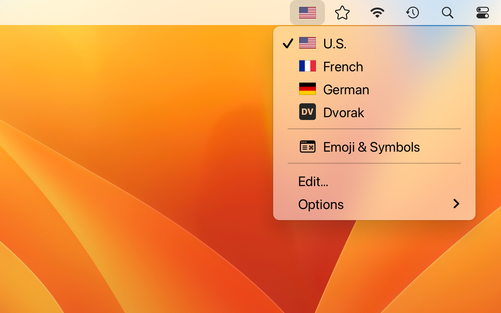

Keyboard Switcheroo
Switch keyboard languages with ease. Perfect for polyglots and vexillologists!

Switcheroo is a full drop-in replacement for the macOS “Inputs” menu for switching keyboard languages.
Choose from flags, emoji, common symbols — or select any image from your computer.
Supercharge your workflow with customizable keyboard shortcuts.
Menubar hidden or too crowded? Float Switcheroo in its own window!
Automate your input sources using the Shortcuts app.
Localized in English, Czech, French, German, Italian, Japanese, Korean, Russian, Simplified Chinese, and Ukrainian.